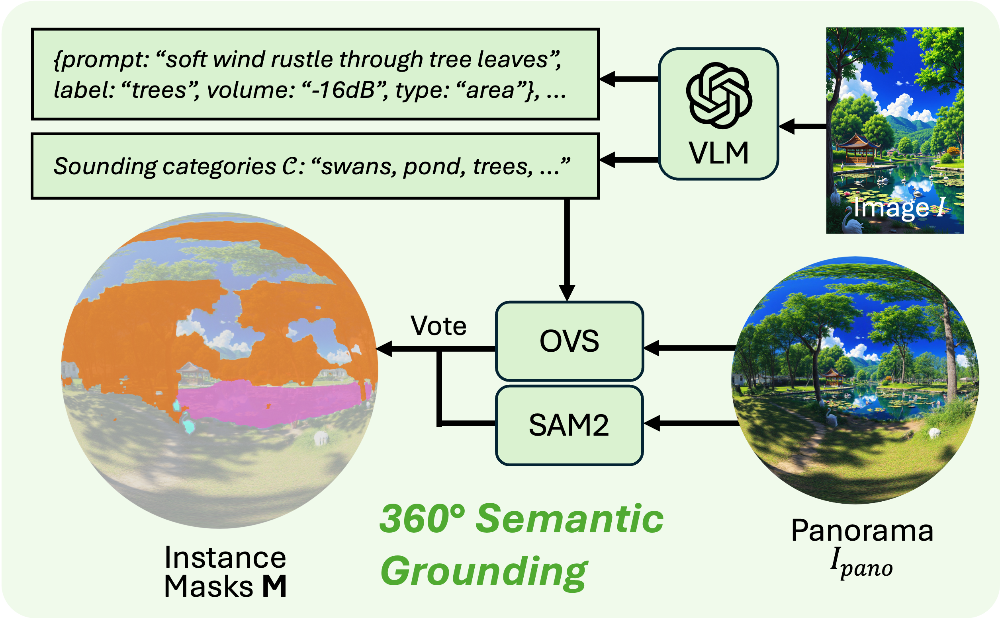
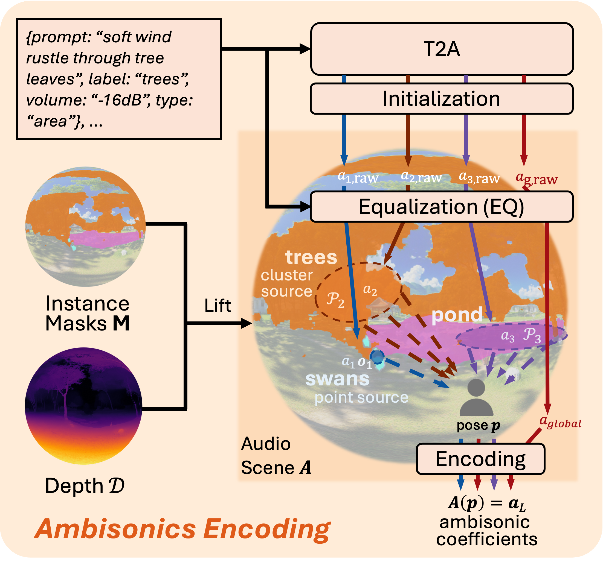
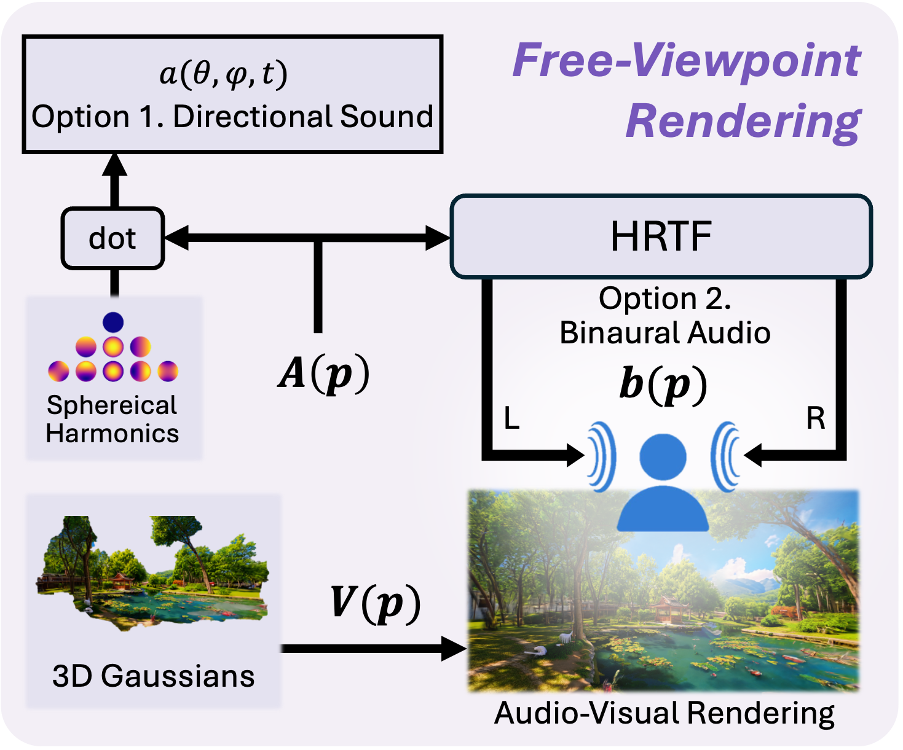

Interactive Demo
Headphones are strongly recommended!
NEW!
Try VR Demo
Use the embedded preview here, or open the full demo.
The interactive demo is not supported on mobile devices. Please access the demo on a desktop or laptop browser for the full experience.
Pipeline

Visual Scene Generation
We first build the visual scene V from a single image through a three-stage process:
(1) Calibrate the image I by estimating the camera elevation φ and field of view f;
(2) Warp the calibrated image into the panoramic domain and outpaint it to obtain a full 360° panorama Ipano;
(3) Lift the Ipano to 3D using a panorama-to-3D model 𝒢V, producing 3D Gaussian splats and panoramic depth map 𝒟, which together form the visual scene V.
360° Semantic Grounding
We ground potential sound sources in the panorama by combining semantic proposal and panoramic segmentation:
(1) Query a vision-language model VLM with the input image I to predict sounding categories 𝒞 together with acoustic attributes such as text prompts, source types, and volume controls;
(2) Segment the panorama Ipano by combining instance masks on FoV images from an open-vocabulary segmenter OVS with panorama-wide proposals from SAM2, yielding semantically grounded and geometrically consistent instance masks M.


Ambisonics Encoding
Our ambisonics encoding builds the audio scene A by lifting panoramic instance masks M with depth 𝒟 into 3D, generating and refining audio via a text-to-audio (T2A) model followed by initialization and equalization,
and encoding all sounds into ambisonic coefficients around the listener pose p. We represent the auditory scene using three complementary source types:
POINT
Point Sources
Localized 3D emitters with precise directionality.
CLUSTER
Clustered Sources
Distributed area sources with diffuse spatial sound.
GLOBAL
Global Ambience
Omnidirectional background audio without explicit grounding.
Free-Viewpoint Rendering
We render synchronized audio-visual outputs at an arbitrary listener pose p by rendering the visual scene as an image V(p) and decoding the ambisonic sound field A(p) into either directional sound or binaural audio:
DIRECTIONAL
Directional Sound
Projects the ambisonic coefficients onto spherical harmonics to recover directional audio
a(θ,ϕ,t),
enabling sound playback from arbitrary viewing directions.
BINAURAL
Binaural Audio
Decodes the ambisonic field through an HRTF-based renderer to produce binaural waveform b(p), yielding immersive left-right spatial audio for the current listener pose.

Citation
@article{jin2026sonoworld,
title={
SonoWorld: From One Image to a 3D Audio-Visual Scene},
author={
Jin, Derong and Chen, Xiyi and Lin, Ming C. and Gao, Ruohan},
booktitle={
Proceedings of the IEEE/CVF Conference on Computer Vision and Pattern Recognition (CVPR)},
year={
2026}
}